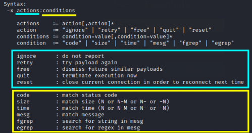

ftp
How to know the mesg returned when we send invalid credentials
patator
ftp_login host=10.0.0.1
user="random"
password="random"
Example of usage:patator
ftp_login host=10.0.0.1
user=FILE0
password=FILE1
0=users.txt
1=passwords.txt
-x ignore:
mesg="
Login incorrect."
◇
ftp_login → ftp service module
◇
host → specify one single host where the ssh service is running
◇
user → → we are using the placeholder FILE0
▪ FILE → meaning we want to use a file
▪ 0 → match the variable associated to the file containing the wordlist
◇
password → we are using the placeholder FILE1
▪ FILE → meaning we want to use a file
▪ 1 → match the variable associated to the file containing the wordlist
The number after FILE indicate in which order to iterate the wordlists.
In this scenario Patator take the first word in users.txt and iterates through all the words in passwords.txt.
Then take the second word in users.txt and iterates through all the words in passwords.txt. And so on...
◇
-x → specify what
action do when receiving a
condition; with this option we can filter the output and act accordingly
▪
ignore → is the action
▪ "
Login incorrect." → is the condition that we can find in
mesg returned by the service
In this way the tool returns only working credentials and ignores all the other responses with the "Login incorrect" string.
{kind=link}